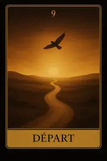
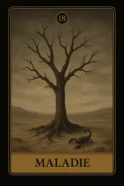
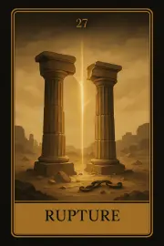
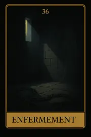
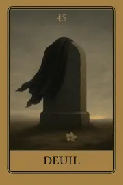
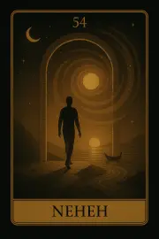
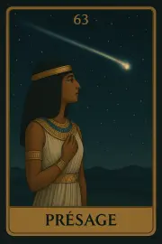
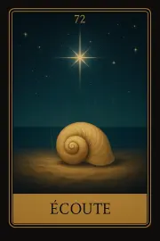
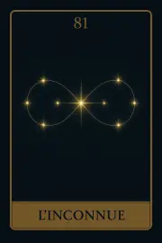

Famille 9 – Sia (Planète inconnue)
Cette famille explore le saut intérieur, la renaissance et la révélation intuitive. Elle est liée à une planète au-delà du connu et à Sia, force de la conscience éclairée et de l’intuition pure. Elle ouvre la voie vers l’invisible, les mutations profondes et les appels de l’âme.
Carte 9 – Départ
Mots-clés : Quitter, Séparation, Transition, Nouveau chemin, Évolution
Numérologie : 9 – Fin de cycle, Réalisation, Conclusion, Libération
Planète principale : Planète Inconnue
Divinité principale : Sia
Planète secondaire : Soleil
Divinité secondaire : Râ
Interprétation de la carte 9 : Départ (droite)
1. Caractère de la personne
La carte Départ symbolise une personne qui est dans un moment de transition ou de changement significatif. Elle pourrait être en train de quitter un ancien mode de vie ou une situation pour entamer un nouveau chemin. Sous l'influence de Sia, cette personne est probablement ouverte aux nouvelles expériences, prête à abandonner le passé pour faire face à l’inconnu avec une grande capacité d’adaptation. Elle est en quête de vérité et de compréhension sur elle-même et sur la vie, cherchant à progresser vers une nouvelle évolution. L'influence secondaire du Soleil et de Râ apporte une lumière qui aide à éclairer la voie à suivre, apportant clarté et confiance pour faire face à ce départ et à ce changement. Cette personne peut sentir que le moment est venu de passer à l’étape suivante de sa vie.
2. Plan affectif
Dans le domaine affectif, Départ représente une séparation ou une évolution significative dans une relation. Il peut s’agir d’une rupture amoureuse, d’un éloignement émotionnel ou même d’un changement de dynamique dans une relation existante. Cette carte peut aussi symboliser un nouveau départ dans une relation où les deux parties choisissent de changer ou de s’adapter à une nouvelle réalité. L’influence de Sia et de Planète inconnue peut rendre cette situation difficile à comprendre dans l’immédiat, car elle touche à l'inconnu, mais l’influence du Soleil et de Râ aide à éclairer ce processus de changement, apportant clarté et un nouveau départ plus lumineux.
3. Plan matériel
Sur le plan matériel, Départ indique un changement qui peut être symbolisé par un déménagement, un changement de carrière ou une restructuration importante de la vie professionnelle ou personnelle. Cela pourrait aussi indiquer la fin d’un cycle professionnel, la fin d’un projet ou une nouvelle opportunité dans le domaine financier ou matériel. L’influence de Sia souligne que ce départ fait partie d’un processus d’évolution vers quelque chose de plus évolutif. L'influence du Soleil et de Râ suggère que ce changement est positif, mais il nécessite de la clarté et un regard optimiste pour voir les opportunités cachées.
4. Plan professionnel
Professionnellement, Départ symbolise un moment où la personne quitte une situation de travail ou un environnement professionnel qui ne lui convient plus, ou encore un changement de carrière ou un nouveau projet. Cela peut aussi indiquer une transition importante dans le domaine professionnel, comme une promotion ou un changement de direction dans les objectifs de carrière. L’influence de Sia parle d’un processus spirituel de transition, où la personne choisit de s’aventurer dans un nouveau chemin professionnel, même si cela implique de quitter une situation familière. L'influence secondaire du Soleil et de Râ indique que cette transition peut être difficile, mais elle est éclairée par une vision plus large qui apporte des récompenses futures.
5. Plan spirituel
Spirituellement, Départ symbolise un moment de libération et de transition intérieure. C'est une évolution spirituelle où la personne abandonne des croyances anciennes ou des attachements pour avancer vers un nouveau chemin spirituel. Cela peut être la fin d’un cycle spirituel ou un éveil spirituel qui pousse la personne à abandonner l’ancien pour mieux se connecter à sa véritable essence. Sous l'influence de Sia, cette carte symbolise la recherche de vérité et de réalisation spirituelle à travers un départ intérieur. L’influence secondaire du Soleil et de Râ éclaire ce processus, apportant une vision lumineuse et un éveil spirituel qui guide la personne vers sa véritable voie.
Carte 9 : Départ (inversée)
Lorsqu'elle est inversée, la carte Départ symbolise une résistance au changement, une période d'incertitude ou de retard dans la transition. La personne pourrait être bloquée dans le passé, rejetant le changement ou ne sachant pas comment avancer. Cela pourrait également indiquer une situation figée où il y a une difficulté à se libérer de ce qui est ancien ou inadapté à la nouvelle réalité.
1. Caractère de la personne
En position inversée, cette carte peut indiquer une personne qui a du mal à lâcher prise, qui refuse de partir ou de s’adapter à un changement nécessaire. Elle pourrait être bloquée par la peur de l'inconnu ou de perdre quelque chose d’important. Il peut aussi s’agir d'une personne qui procrastine ou qui a peur de se lancer dans l'inconnu, refusant d'accepter le changement.
2. Plan affectif
Sur le plan affectif, l’inversion de Départ indique une relation stagnante ou un blocage émotionnel où la personne refuse de laisser partir une relation ou un attachement qui ne lui sert plus. Cela pourrait aussi signifier une difficulté à se séparer ou à passer à autre chose après une rupture, ou encore une relation où les deux partenaires résistent au changement. L’influence de Soleil et de Râ montre que le processus de guérison et de révélation est possible, mais il nécessite un travail de lâcher prise.
3. Plan matériel
Sur le plan matériel, Départ inversé peut indiquer une difficulté à quitter une situation financière ou professionnelle qui ne convient plus. Cela peut représenter une hésitation à déménager, à changer de travail ou à laisser derrière des projets qui ne sont plus bénéfiques. L'influence de Soleil et de Râ peut suggérer que l’ouverture à de nouvelles opportunités pourrait apporter des résultats positifs, mais la personne doit abandonner la peur du changement pour avancer.
4. Plan professionnel
Professionnellement, l’inversion de Départ montre une résistance à quitter un emploi ou une situation professionnelle qui ne correspond plus aux objectifs de la personne. Cela pourrait également signifier une période de stagnation dans laquelle la personne hésite à prendre des décisions importantes concernant sa carrière. L'influence du Soleil et de Râ montre qu'il est possible de trouver l'éclairage nécessaire pour faire face au changement, mais cela demandera de la volonté et de la persévérance.
5. Plan spirituel
Spirituellement, Départ inversé peut symboliser un retard dans l’évolution spirituelle. La personne pourrait être en guerre intérieure avec son chemin spirituel, résistant à la transformation ou à un changement de perspective. Cela peut aussi signifier une méfiance à l’égard de la nouvelle voie spirituelle qui se présente. Cependant, l'influence de Soleil et de Râ montre que la réalisation spirituelle est toujours possible, mais il faut accepter le processus et lâcher prise avec ce qui n'est plus nécessaire.
Résumé de la carte 9 : Départ
La carte Départ symbolise une transition importante et un nouveau chemin à suivre. Elle représente un moment de libération où la personne quitte un ancien cycle pour embrasser l’inconnu. En position inversée, cette carte indique une résistance au changement, une peur de l’inconnu, ou un retard dans la transition, mais l’influence secondaire du Soleil et de Râ offre la possibilité de réaliser ce qui doit être fait pour avancer dans la direction correcte.
Carte 18 – Maladie
Mots-clés : : Affliction, Détérioration, Péril, Isolement, Suffering
Numérologie : 18 – Détérioration, Affliction, Transformation nécessaire, Épreuve
Planète principale : Planète inconnue
Divinité principale : Sia
Planète secondaire : Terre
Divinité secondaire : Geb
Interprétation de la carte 18 : Maladie (droite)
1. Caractère de la personne
La carte Maladie symbolise une personne qui traverse une épreuve importante, qu’elle soit physique ou émotionnelle. Cette personne peut ressentir un sentiment de détérioration, d’affaiblissement ou d'épuisement, parfois lié à un manque de soins personnels ou à une pression constante sur son bien-être. L'influence de Sia (planète inconnue) ajoute un côté mystérieux ou caché à cette affliction – une épreuve qui semble surgir sans explication claire, pouvant entraîner une transformation personnelle importante. Terre / Geb en influence secondaire, cependant, suggère que la personne peut se réancrer et qu'il existe une possibilité de guérison ou de régénération si elle se donne les moyens de revenir à la stabilité.
2. Plan affectif
Sur le plan affectif, Maladie peut symboliser une relation où l’un des partenaires traverse une période de souffrance ou de détérioration émotionnelle. Cela peut être un moment de perte d’énergie ou de fragilité émotionnelle dans la relation. L’influence de Sia indique qu'il pourrait y avoir une cause cachée à cette souffrance, quelque chose qui n'est pas directement visible ou que l’on n’a pas encore reconnu dans la relation. L’influence secondaire de Terre / Geb montre que le retour à un ancrage émotionnel et à une stabilité affective est possible, mais nécessite un regard réaliste sur la situation et un effort de réconciliation.
3. Plan matériel
Sur le plan matériel, Maladie représente des moments où la personne se trouve affaiblie dans son environnement professionnel ou matériel. Cela peut indiquer une période de détérioration professionnelle, comme un conflit au travail, une période de difficulté financière ou une absence de progrès dans des projets importants. L’influence de Sia suggère que cette situation pourrait être liée à une énergie cachée, un obstacle invisible ou une épreuve non anticipée. Cependant, l'influence de Terre / Geb montre que cette situation peut être surmontée si l'on prend le temps de revenir à la réalité, d'analyser les causes et de se réancrer dans des solutions pratiques.
4. Plan professionnel
Professionnellement, Maladie peut signifier un déclin dans la carrière ou dans un projet qui semble être invisible ou difficile à résoudre. Il se peut que des facteurs externes ou des problèmes internes de la personne soient à l'origine de cette baisse d'énergie ou de progrès. Cela pourrait également signifier une épreuve professionnelle (perte de travail, baisse de performance, etc.). Sia en influence principale montre que la situation peut sembler mystérieuse ou inexplicable, mais avec l’influence de Terre / Geb, la personne peut trouver une solution stable en revenant à des méthodes concrètes et en résolvant la situation de manière pragmatique.
5. Plan spirituel
Spirituellement, Maladie symbolise un déséquilibre ou une période d’épreuve spirituelle. Cela peut représenter un moment où la personne se sent spirituellement affaiblie, peut-être en raison de doutes ou de difficultés intérieures. Il se peut qu’elle traverse une phase d'isolement spirituel ou une perte de direction. L'influence de Sia indique qu’il peut y avoir une énergie cachée ou un blocage spirituel difficile à comprendre, mais l’influence de Terre / Geb montre que cette phase peut être surmontée en revivant une pratique spirituelle ancrée et en revenant à une vérité profonde.
Carte 18 : Maladie (inversée)
Lorsqu'elle est inversée, Maladie symbolise une guérison ou une régénération possible après une période difficile. L’inversion montre que la souffrance ou les obstacles qui étaient présents commencent à se dissiper, et il peut y avoir une guérison physique, émotionnelle ou spirituelle. Cependant, l'inversion peut aussi indiquer une personne qui refuse de faire face à ses problèmes de manière constructive, et qui ignore des symptômes ou des signaux de détérioration qui nécessitent d’être traités.
1. Caractère de la personne
En position inversée, Maladie peut symboliser une personne qui rejette ou refuse d’affronter les difficultés émotionnelles ou physiques qu’elle traverse. Elle pourrait être aveugle aux signaux de son corps ou de son esprit, ignorant des problèmes qui nécessitent une attention particulière. Cela peut aussi indiquer une négligence ou un déséquilibre intérieur, où la personne choisit de rester dans la souffrance plutôt que de chercher à guérir.
2. Plan affectif
Sur le plan affectif, Maladie inversée pourrait signifier que la personne ignore les tensions ou les problèmes relationnels, refusant de faire face à une situation conflictuelle ou de se guérir émotionnellement. Cela peut également indiquer une relation toxique où les problèmes de santé émotionnelle sont niés ou réprimés, empêchant toute évolution ou guérison. Il est nécessaire de briser le cycle de déni pour avancer vers la réconciliation.
3. Plan matériel
Dans le domaine matériel, l’inversion de Maladie pourrait signifier que la personne ignore les signes de détérioration dans sa vie professionnelle, financière ou personnelle, se concentrant sur des symptômes superficiels au lieu de résoudre le fond du problème. Cela peut aussi indiquer que la situation matérielle commence à s’améliorer après une période de stagnation ou de déclin. Cependant, la personne doit être vigilante et ne pas rester dans l’inaction.
4. Plan professionnel
Professionnellement, Maladie inversée peut représenter une situation où la personne commence à se rétablir après une période difficile ou de stagnation, mais elle doit encore reconnaître et traiter les problèmes sous-jacents. Elle peut également indiquer une récupération après une perte ou un échec professionnel, mais l'inversion suggère qu'il existe encore un manque d'action proactive ou un refus de traiter le fond du problème.
5. Plan spirituel
Spirituellement, Maladie inversée symbolise une libération ou une régénération après une période de doute spirituel. Cela pourrait signifier une reprise de la confiance spirituelle ou une phase où la personne se libère de croyances limitantes. Cependant, elle pourrait aussi être dans un délire spirituel ou dans une négligence des signes de sa santé spirituelle, ce qui pourrait la rendre vulnérable à d'autres blocages.
Résumé de la carte 18 : Maladie
La carte Maladie symbolise une épreuve difficile, qu'elle soit physique, émotionnelle ou psychologique. En position inversée, elle indique une libération progressive des afflictions ou des obstacles, mais il reste des blocages ou des résistances à affronter complètement la situation.
Carte 27 – Rupture
Mots-clés : : Séparation, Perte, Détachement, Transition brutale, Changement douloureux
Numérologie : 27 – Changement radical, Transition, Libération, Fin d’un cycle
Planète principale : Planète inconnue
Divinité principale : Sia
Planète secondaire : Jupiter
Divinité secondaire : Amon-Rê
Interprétation de la carte 27 : Rupture (droite)
1. Caractère de la personne
La carte Rupture symbolise une personne qui traverse ou a traversé une période de transition brutale. Cela peut signifier une séparation importante, soit émotionnelle, soit physique, qui chamboule profondément sa vie. La personne peut être marquée par la douleur d’une perte ou d’un départ, et ressent un fort détachement des événements, des personnes ou des situations qui ont constitué une partie essentielle de son passé. Cependant, cette carte incite à comprendre que bien que cette rupture soit difficile, elle est souvent nécessaire pour permettre la croissance et l’évolution personnelle. L’influence de la Planète inconnue / Sia représente une transition qui peut être difficile à comprendre dans l'instant mais qui, à long terme, est essentielle pour ouvrir la voie à de nouvelles possibilités. Jupiter / Amon-Rê en influence secondaire encourage une perspective optimiste à long terme, suggérant que cette rupture, aussi douloureuse soit-elle, est un mouvement nécessaire pour aller vers quelque chose de plus grand.
2. Plan affectif
Sur le plan affectif, Rupture symbolise une séparation émotionnelle, un détachement ou la fin d’une relation importante. Il peut s’agir d’une rupture amoureuse, d’une séparation avec un proche ou d’un changement dans les dynamiques relationnelles. Cette carte indique un moment où la personne doit faire face à la perte d’un lien affectif profond. Cela peut aussi signifier que des blessures du passé refont surface, apportant une douleur liée à des relations terminées. Sia apporte la nécessité de laisser aller ce qui est ancien pour faire place à du neuf, et Jupiter / Amon-Rê suggère que même si cette rupture est douloureuse, elle est nécessaire pour préparer le terrain à des relations plus saines et épanouissantes à l’avenir.
3. Plan matériel
Dans le domaine matériel, Rupture symbolise une perte importante sur le plan financier ou professionnel. Cela peut être lié à la perte d'un emploi, la rupture d'un contrat, ou une transition brusque dans le domaine des affaires ou des finances. Cette carte indique un changement difficile dans la situation matérielle de la personne, peut-être lié à une crise professionnelle ou à une réévaluation de ses priorités financières. L'influence de Sia représente une rupture inattendue ou un événement qui perturbe l’équilibre matériel actuel, mais Jupiter / Amon-Rê conseille de voir cette situation comme une occasion de transformation et de se recentrer sur des objectifs plus grands.
4. Plan professionnel
Professionnellement, Rupture indique un changement de direction brutal ou une perte de stabilité professionnelle. Cela peut être la fin d’un partenariat commercial, la fin d’un projet ou un changement majeur dans la carrière. Cette carte parle de situations professionnelles où une transition brusque survient, nécessitant une adaptation rapide. L'influence de Sia montre que cette rupture n'est pas une fin en soi, mais plutôt un mouvement nécessaire pour évoluer. Jupiter / Amon-Rê encourage à prendre cette situation comme un nouveau départ, même si cela peut demander de surmonter une phase de douleur avant de se réorienter vers de nouvelles opportunités.
5. Plan spirituel
Spirituellement, Rupture représente une épreuve spirituelle où une personne doit se détacher de ses anciennes croyances ou pratiques. Cela peut être lié à un renouvellement spirituel, où des anciennes formes de pensée doivent être abandonnées pour faire place à une compréhension plus profonde ou plus authentique de soi et du monde spirituel. La carte montre que des changements douloureux ou des disruptions spirituelles peuvent se produire, mais ces moments sont essentiels pour ouvrir la voie à une croissance spirituelle profonde. L’influence de Sia souligne que même si cette rupture spirituelle est difficile à accepter, elle est nécessaire pour que la personne puisse évoluer spirituellement. Jupiter / Amon-Rê soutient l’idée que cette transition spirituelle peut conduire à une compréhension plus large et à une révélation supérieure.
Carte 27 : Rupture (inversée)
Lorsqu'elle est inversée, Rupture symbolise un blocage ou une résistance à une rupture nécessaire. Cela peut signifier que la personne est refusant de lâcher prise, ou qu’elle reste attachée à quelque chose qu’elle doit laisser derrière elle, que ce soit une relation, une situation ou une croyance. L'inversion indique qu’il est peut-être temps de rompre avec des choses qui nous retiennent, mais la personne a du mal à se libérer. Il peut aussi s’agir d’une rupture non résolue ou d’une transition non terminée, où la personne se retrouve coincée dans un état de transition sans pouvoir avancer.
1. Caractère de la personne
En position inversée, Rupture peut symboliser une personne qui évite de se détacher de quelque chose qui n’est plus bénéfique pour elle. Elle peut être en résistance à un changement nécessaire, bloquée dans une situation ou une relation qui doit être abandonnée. Cette carte inversée incite à comprendre que la personne doit laisser aller le passé pour pouvoir évoluer.
2. Plan affectif
Sur le plan affectif, Rupture inversée suggère que la personne refuse d’accepter la fin d’une relation ou qu’elle est piégée dans une relation qui lui cause du tort. Il y a une difficulté à rompre les liens, même si la relation est devenue toxique ou qu’elle ne correspond plus à ses besoins. Cela peut aussi symboliser un blocage émotionnel où la personne ne parvient pas à libérer son cœur.
3. Plan matériel
Dans le domaine matériel, Rupture inversée indique une incapacité à se détacher d'une situation financière ou professionnelle qui ne fait plus de sens. Cela peut être une situation où la personne continue à investir du temps et de l'énergie dans quelque chose qui ne fonctionne pas, par peur de lâcher prise ou de perdre quelque chose. L’inversion de cette carte indique qu’il est temps de réévaluer cette situation et de laisser aller les choses pour pouvoir progresser.
4. Plan professionnel
Professionnellement, Rupture inversée peut signifier une résistance à un changement nécessaire dans la carrière ou le travail. La personne peut être piégée dans une situation professionnelle qui n’évolue plus ou qui est devenue stagnante. Il est possible que des échecs professionnels ou des opportunités manquées soient dus à une peur de la rupture. Cette carte inversée invite la personne à faire face à la réalité et à accepter que cette situation doive changer pour ouvrir la voie à de nouvelles opportunités.
5. Plan spirituel
Spirituellement, Rupture inversée représente un blocage spirituel où la personne n’arrive pas à se détacher de vieilles croyances ou de pratiques spirituelles limitantes. Cela peut aussi signifier que la personne est bloquée dans un ancien système de pensée qui ne lui sert plus. La carte inversée suggère qu’il est nécessaire de se libérer de ces croyances limitantes pour pouvoir évoluer spirituellement et permettre à de nouvelles compréhensions de s’épanouir.
Résumé de la carte 27 : Rupture
La carte Rupture symbolise un changement ou une séparation difficile mais nécessaire. En position inversée, elle représente une résistance au changement, une incapacité à lâcher prise, ou un blocage dans une transition nécessaire. Le message est d'accepter que certaines situations doivent se terminer pour laisser place à un renouveau. Le travail de détachement et d’acceptation est essentiel pour aller de l’avant.
Carte 36 – Enfermement
Mots-clés : : Captivité, Confinement, Isolement, Restriction, Prison intérieure
Numérologie : 36 – Restriction intérieure, Confinement émotionnel, Isolement psychologique, Blocage mental
Planète principale : Planète inconnue
Divinité principale : Sia
Planète secondaire : Mars
Divinité secondaire : Sekhmet
Interprétation de la carte 36 : Enfermement (droite)
1. Caractère de la personne
La carte Enfermement symbolise une personne qui traverse une période de restriction ou de confinement intérieur. Cette carte indique une captive émotionnelle ou mentale, où la personne se sent bloquée par ses propres choix ou pensées. Elle peut avoir du mal à avancer ou à sortir d'une situation où elle se sent piégée, que ce soit sur le plan personnel, affectif ou professionnel. L’influence de Mars / Sekhmet souligne que cette personne possède une force intérieure pour surmonter cette épreuve, mais elle doit apprendre à libérer cette énergie de manière constructive pour sortir de sa propre prison psychologique. Sia évoque aussi un blocage spirituel, où la personne peut se sentir déconnectée de ses propres objectifs spirituels ou de son chemin intérieur.
2. Plan affectif
Sur le plan affectif, Enfermement symbolise une relation étouffante ou un confinement émotionnel. La personne peut se sentir prisonnière de ses propres émotions ou de celles de l’autre. Il peut s’agir d’une relation où les libertés sont limitées, et où l'on ressent une pression émotionnelle ou un blocage affectif. Cela peut aussi signifier une dépendance émotionnelle où la personne se sent incapable de se détacher d’une relation qui ne lui est pas bénéfique. L’influence de Mars / Sekhmet suggère que la personne doit prendre des mesures courageuses pour se libérer de cette situation, mais Sia indique qu’elle doit clarifier ses pensées et ses émotions avant de pouvoir agir.
3. Plan matériel
Dans le domaine matériel, Enfermement représente une situation où la personne se sent bloquée dans ses projets professionnels ou financiers, comme si elle était dans une prison matérielle. Cela peut être dû à des restrictions extérieures (conditions de travail difficiles, contrats restrictifs, manque de ressources) ou à des limitations intérieures (peurs, doutes, manque de confiance). La carte invite à briser ce confinement en changeant d’approche ou en cherchant des solutions créatives pour se libérer de cette situation de blocage. Mars / Sekhmet apporte la force nécessaire pour agir, tandis que Sia encourage à voir plus clairement les chemins à suivre pour avancer.
4. Plan professionnel
Professionnellement, Enfermement peut symboliser une situation de stagnation ou un environnement de travail où la personne se sent prisonnière de ses responsabilités ou bloquée dans un rôle. Cela peut être le signe d’un manque de liberté créative ou d’un sentiment d’être coincé dans une carrière qui ne correspond plus aux aspirations profondes. Mars / Sekhmet suggère qu’il est nécessaire de prendre des mesures courageuses, de se révolter contre les contraintes extérieures, et d’oser sortir de cette situation confinée. Sia incite à voir clairement où se trouvent les possibilités de transformation pour surmonter cet enfermement.
5. Plan spirituel
Spirituellement, Enfermement indique une captive intérieure, où la personne se sent bloquée dans son développement spirituel. Elle peut ressentir un sentiment de stagnation dans sa pratique spirituelle, comme si elle ne parvenait pas à évoluer ou à se connecter avec sa vérité intérieure. Cette carte rappelle qu'il est nécessaire de se libérer des chaînes mentales et émotionnelles pour progresser spirituellement. Mars / Sekhmet offre la force nécessaire pour dépasser ces obstacles, mais Sia suggère que la personne doit clarifier ses intentions spirituelles avant de pouvoir aller de l’avant.
Carte 36 : Enfermement (inversée)
Lorsqu'elle est inversée, Enfermement symbolise une libération partielle, mais aussi la répétition de comportements ou de schémas négatifs qui maintiennent la personne dans une situation de prison intérieure. Cela peut signifier que la personne a peut-être pris conscience de ses limites, mais qu’elle continue à se laisser emprisonner par ses peurs ou ses schémas répétitifs. L'inversion appelle à prendre des mesures concrètes pour se libérer complètement de cette situation. Cette carte incite à changer de perspective et à rompre avec le cycle qui enferme la personne dans la même dynamique.
1. Caractère de la personne
En position inversée, Enfermement représente une personne qui est bloquée par ses propres schémas mentaux ou émotionnels. Bien que la personne puisse être consciente de la situation, elle continue de perdre du temps dans un état de stagnation, incapable de se libérer. Il est crucial de briser le cycle de pensée négatif et de chercher des solutions pratiques pour avancer.
2. Plan affectif
Sur le plan affectif, Enfermement inversée symbolise une personne qui peut ressentir une libération émotionnelle, mais qui reste prisonnière de ses blessures passées. Cela peut indiquer que la personne est dans une relation où elle se sent toujours restreinte, mais commence à percevoir des opportunités de libération. L'inversion de cette carte appelle à trouver le courage d'agir et de se libérer complètement des relations toxiques ou des attachements qui maintiennent la personne dans un enfermement émotionnel.
3. Plan matériel
Dans le domaine matériel, Enfermement inversée peut signifier que la personne commence à ressentir la possibilité de briser les contraintes externes qui l'empêchent de progresser. Toutefois, il y a un risque de retomber dans des schémas de blocage ou de manque de ressources. L'inversion de cette carte incite à prendre des actions concrètes pour sortir de la stagnation, à chercher des opportunités de croissance et à s’affranchir des limitations extérieures.
4. Plan professionnel
Professionnellement, Enfermement inversée peut symboliser une libération partielle dans un environnement de travail, où la personne commence à voir des solutions pour sortir de sa situation professionnelle bloquée. Cependant, elle peut encore être tentée de revenir à ses anciennes habitudes ou à des comportements limitants. Il est nécessaire d’aller au-delà de la peur de l’inconnu et de prendre des décisions audacieuses pour se libérer des limites professionnelles.
5. Plan spirituel
Spirituellement, Enfermement inversée indique une personne qui cherche à se libérer des chaînes spirituelles, mais qui est encore coincée dans des schémas réducteurs. L’inversion incite à rechercher activement des solutions spirituelles, à faire face aux obstacles et à se libérer des limitations intérieures. C’est le moment de clarifier les intentions spirituelles et de reprendre les rênes de son chemin intérieur.
Résumé de la carte 36 : Enfermement
La carte Enfermement symbolise une période de restriction ou de blocage, où la personne se sent capturée par ses propres choix ou ses émotions. En position inversée, elle met en lumière une libération partielle, mais aussi le danger de rester coincé dans des schémas limitants. Cette carte invite à rompre les chaînes et à agir pour se libérer totalement des situations d’isolement et de confinement.
Carte 45 – Deuil
Mots-clés : : Chagrin, Tristesse, Fin d’une relation, Perte irréparable, Lâcher prise
Numérologie : 45 – Transition émotionnelle, Période de chagrin, Perte et acceptation, Évolution après la fin d’un cycle
Planète principale : Planète inconnue
Divinité principale : Sia
Planète secondaire : Mercure
Divinité secondaire : Thot
Interprétation de la carte 45 : Deuil (droite)
1. Caractère de la personne
La carte Deuil symbolise une personne qui traverse une période de transition émotionnelle intense. Elle peut être en train de vivre une perte personnelle ou une fin de cycle qui génère une profonde tristesse. Sous l'influence de Sia, cette carte invite la personne à accepter l'irréversibilité de la perte, et à comprendre que certains chapitres de sa vie doivent être clôturés pour permettre à un nouveau chapitre d'émerger. L'influence de Mercure / Thot soutient cette transition en apportant une réflexion mentale profonde et une compréhension des raisons sous-jacentes de cette perte, tout en aidant la personne à gérer les émotions de manière plus lucide et sereine.
2. Plan affectif
Sur le plan affectif, Deuil représente la fin d’une relation ou d’un attachement profond. Cela peut indiquer une rupture amoureuse, une perte d’amitié, ou une séparation émotionnelle difficile. Cette carte invite la personne à accepter cette perte et à laisser aller les sentiments de chagrin et de regret. Sia suggère que cette perte fait partie d’un processus d’évolution personnelle, tandis que Mercure / Thot conseille de réfléchir à la situation avec calme, de comprendre les leçons tirées de cette relation, et d’utiliser cette période pour évoluer émotionnellement.
3. Plan matériel
Dans le domaine matériel, Deuil peut symboliser la perte d’une situation matérielle importante, comme la fin d’un projet ou la perte de ressources. La personne pourrait être confrontée à une épreuve économique, un changement dans ses conditions de vie, ou une perte de statut. Sia indique que cette perte fait partie d’un processus nécessaire d’évolution, et qu’il est important de l’accepter pour pouvoir reconstruire sur de nouvelles bases. Mercure / Thot aide à réévaluer les priorités matérielles, à chercher des solutions pratiques et à utiliser cette période pour prendre des décisions réfléchies pour l'avenir.
4. Plan professionnel
Professionnellement, Deuil représente la fin d’une phase professionnelle importante, telle qu’une perte d’emploi, un changement de direction dans la carrière, ou la fin d’un projet majeur. Cette carte symbolise un moment où il est nécessaire de laisser partir ce qui ne peut plus être conservé, tout en réévaluant les prochaines étapes professionnelles. Sia suggère que cette perte permet une évolution professionnelle et qu’il est nécessaire de l’accepter pour avancer. Mercure / Thot encourage à analyser la situation de manière pragmatique, à tirer des leçons de cette transition, et à réajuster les objectifs de carrière.
5. Plan spirituel
Spirituellement, Deuil symbolise la perte d’une ancienne croyance ou la fin d’un chemin spirituel. Cela peut représenter une période de doute ou de crise spirituelle, où la personne doit faire face à des changements dans sa perception du monde spirituel. Cette carte invite à lâcher prise vis-à-vis de vieilles croyances ou pratiques qui ne servent plus le bien-être spirituel de la personne. Sia indique que ce processus est essentiel pour ouvrir la voie à une nouvelle forme de compréhension spirituelle, et Mercure / Thot soutient ce processus en permettant à la personne de réfléchir à la situation spirituellement, en trouvant une nouvelle perspective qui l’aidera à avancer sur son chemin spirituel.
Carte 45 : Deuil (inversée)
En position inversée, Deuil symbolise la difficulté à accepter la perte ou un blocage émotionnel. La personne pourrait être dans une phase où elle refuse d’accepter la réalité de la perte, et où elle reste accrochée au passé au lieu de permettre au processus de guérison de se dérouler. L'inversion suggère qu’il est temps de faire face à cette perte et de laisser aller les émotions associées. Cela peut aussi indiquer une période de retard dans le processus de guérison, où la personne se trouve bloquée dans son chagrin et n’arrive pas à avancer.
1. Caractère de la personne
En position inversée, Deuil représente une personne qui lutte contre ses émotions liées à la perte et qui refuse de laisser partir ce qui est fini. Cette carte montre que la personne est dans une phase de résistance émotionnelle, où elle refuse de reconnaître la fin de quelque chose d’important, ce qui empêche la guérison. Elle peut se sentir bloquée émotionnellement, incapable d’aller de l’avant.
2. Plan affectif
Sur le plan affectif, Deuil inversée symbolise une relation où la perte ou la rupture n'est pas acceptée, ce qui crée un blocage émotionnel. Cela peut signifier que la personne est toujours accrochée à une relation du passé, qu'elle ne veut pas accepter la fin ou qu’elle continue à nourrir des illusions. L’inversion de cette carte incite à accepter la séparation et à laisser partir les attachements émotionnels qui ne servent plus à la croissance personnelle.
3. Plan matériel
Dans le domaine matériel, Deuil inversée peut symboliser un refus de se détacher d’une situation matérielle qui doit pourtant être abandonnée. Cela peut signifier que la personne continue à lutter contre une perte financière, un changement de situation économique ou un échec matériel qu'elle n’arrive pas à accepter. L’inversion incite à reconnaître la perte et à chercher à reconstruire sur des bases solides, sans rester accrochée aux vestiges du passé.
4. Plan professionnel
Professionnellement, Deuil inversée indique qu'une perte professionnelle ou une fin de projet n’a pas été acceptée, et que la personne reste bloquée dans un cycle d’attachement à ce qui est révolu. Cela peut aussi symboliser une difficulté à passer à autre chose ou à tourner la page après une rupture de carrière. L’inversion de cette carte suggère qu'il est temps d’accepter la fin et de recentrer l’énergie sur de nouveaux objectifs professionnels.
5. Plan spirituel
Spirituellement, Deuil inversée symbolise un refus de lâcher prise sur d'anciennes croyances ou pratiques. Cela indique que la personne est dans un état de stagnation spirituelle, où elle ne parvient pas à accepter que certaines croyances ne lui servent plus. L’inversion de cette carte invite à accepter le changement spirituel, à laisser partir ce qui ne sert plus, et à ouvrir son esprit à de nouvelles perceptions spirituelles.
Résumé de la carte 45 : Deuil
La carte Deuil symbolise une période de transition émotionnelle, où il est nécessaire de laisser partir une situation, une relation ou un aspect de soi. Elle marque une phase de chagrin, mais aussi de guérison. En position inversée, elle représente un refus d’accepter la perte, bloquant ainsi la guérison et la progression vers de nouveaux cycles.
Carte 54 – Neheh
Mots-clés : : Fin d’un cycle, Transformation, Libération, Passage, Clôture ultime
Numérologie : 54 – Fin d'un cycle, Libération nécessaire, Transition majeure, Clôture définitive, Renaissance symbolique
Planète principale : Planète inconnue
Divinité principale : Sia
Planète secondaire : Vénus
Divinité secondaire : Hathor
Interprétation de la carte 54 : Neheh (droite)
1. Caractère de la personne
La carte Neheh symbolise une personne prête à laisser derrière elle les vieux schémas et à embrasser un nouveau cycle de transformation. Cette carte est un indicateur de clôture, où la personne se trouve prête à fermer un chapitre de sa vie pour en ouvrir un autre. Il peut s’agir d’une période où des comportements, des relations ou des situations doivent être laissés derrière pour permettre à une nouvelle version de soi-même d’émerger. La Planète inconnue et Sia, symbolisant l’inconnu et la transformation, indiquent que cette transformation peut sembler étrange ou déstabilisante, mais elle est nécessaire pour avancer. L’influence secondaire de Vénus / Hathor adoucit cette transformation en apportant harmonie et bienveillance, permettant à la personne de traverser cette période avec une approche plus douce et pleine de sagesse.
2. Plan affectif
Sur le plan affectif, Neheh symbolise la fin d'une relation ou un changement profond dans une connexion. Cela peut marquer la fin d’une relation toxique ou une séparation nécessaire, mais il ne s’agit pas d’une fin définitive sur le plan affectif. C’est une carte qui annonce un nouveau départ dans les relations, où les anciens modèles sont abandonnés et de nouvelles possibilités apparaissent. L’influence de Vénus / Hathor permet à cette fin de se faire dans l’amour et la compassion, facilitant ainsi le passage à une nouvelle forme de relation.
3. Plan matériel
Dans le domaine matériel, Neheh symbolise une fin définitive d’un cycle matériel ou financier. Cela peut marquer la clôture d’un projet, la fin d'une entreprise ou la disparition d’une source de revenus qui n’est plus viable. Cependant, cette fin crée un vide qui permet l’émergence de nouvelles opportunités matérielles. La carte nous incite à laisser partir les éléments obsolètes de notre vie matérielle pour permettre une transformation positive. L’influence de Vénus / Hathor adoucit ce processus de transition en apportant des énergies créatives et un renouveau tangible.
4. Plan professionnel
Professionnellement, Neheh symbolise la fin d’un cycle dans la carrière. Cela peut se manifester par un changement de direction professionnelle, une réorientation de carrière, ou la fin d’une collaboration. Bien que cette fin puisse paraître difficile ou perturbante, elle prépare le terrain pour une nouvelle phase professionnelle. L’influence de Vénus / Hathor suggère que cette transition peut se faire avec harmonie et créativité, permettant à la personne de se réinventer professionnellement et d’embrasser un nouveau chemin dans sa carrière.
5. Plan spirituel
Spirituellement, Neheh représente une libération d’un ancien état spirituel ou d’une croyance obsolète. Elle symbolise un éveil spirituel profond où la personne se libère des illusions ou des limites spirituelles du passé, pour entrer dans un nouveau cycle de conscience. Cette carte annonce un passage spirituel important, où la personne laisse derrière elle ses anciennes limitations pour se renouveler spirituellement. L’influence de Vénus / Hathor aide à naviguer ce processus de transition spirituelle avec douceur, compassion et un nouveau sens d’amour spirituel.
Carte 54 : Neheh (inversée)
En position inversée, Neheh symbolise une résistance à la transformation et au changement. Il peut s'agir d'une opposition intérieure ou d'un refus de laisser aller ce qui doit disparaître. Cela représente un blocage émotionnel, où la personne refuse de laisser mourir certaines choses, qu'il s'agisse d’une relation, d’une situation professionnelle, ou même d’un mode de vie. L’inversion de cette carte nous incite à faire face à la nécessité de lâcher prise, pour permettre une réelle transformation. L'inversion de la carte peut également indiquer que la personne est bloquée dans un passé qu’elle ne peut ou ne veut abandonner, malgré les signes évidents qu’elle doit avancer.
1. Caractère de la personne
En position inversée, Neheh représente une personne qui rejette le changement ou qui résiste à une transformation nécessaire. Elle peut se retrouver bloquée dans un cycle ancien, incapable de se libérer de ce qui ne lui sert plus. Cela peut également indiquer une difficulté à accepter des fins naturelles, que ce soit dans des relations ou dans des projets de vie. Cette carte appelle à surmonter les résistances internes et à accepter que certaines choses doivent finir pour que de nouvelles opportunités émergent.
2. Plan affectif
Sur le plan affectif, Neheh inversée indique des relations qui stagnent ou ne veulent pas se terminer, même lorsque le temps est venu de s’éloigner. Cela peut signifier qu’une relation toxique ou usée persiste, parce que l'une des personnes impliquées refuse de laisser partir. L'inversion de cette carte appelle à mettre un terme à des relations qui ne servent plus, afin de permettre la guérison et la réconciliation. Parfois, cela signifie également ne pas se libérer d’un passé émotionnel qui empêche d’aller de l’avant.
3. Plan matériel
Dans le domaine matériel, Neheh inversée symbolise des situations stagnantes où l'on refuse de se libérer de modèles obsolètes dans la gestion de l’argent ou des biens. Il peut s’agir de conflits financiers ou de difficultés à lâcher un projet ou une idée qui ne fonctionne plus. L'inversion de cette carte incite à réévaluer la situation matérielle, à laisser tomber les anciennes méthodes et à adopter de nouvelles stratégies pour avancer.
4. Plan professionnel
Professionnellement, Neheh inversée représente une résistance au changement dans la carrière. Cela peut signifier quitter un travail ou abandonner un projet qui ne correspond plus aux aspirations personnelles. La personne peut refuser de voir que son travail actuel ne la mène plus vers ses objectifs. Cette carte inversée incite à reconnaître que certains cycles doivent se terminer, pour faire place à de nouvelles opportunités professionnelles.
5. Plan spirituel
Spirituellement, Neheh inversée symbolise un désalignement spirituel ou un refus de transformation spirituelle. La personne peut se retrouver bloquée dans un passé spirituel, incapable de laisser aller des croyances dépassées ou des pratiques qui ne sont plus alignées avec son être profond. Cela suggère qu'il est temps de lâcher prise et d’embrasser un nouveau chemin spirituel, pour évoluer et grandir dans la compréhension spirituelle.
Résumé de la carte 54 : Neheh
La carte Neheh symbolise une fin nécessaire et une libération permettant une transition vers un nouveau cycle. Elle évoque la transformation profonde et l’élimination de ce qui ne sert plus. En position inversée, elle représente une résistance au changement, un refus d’accepter la fin de certains cycles. Cela invite à laisser partir ce qui doit disparaître, afin de pouvoir se réinventer et se transformer de manière positive.
Carte 63 – Présage
Mots-clés : : Signal intérieur, intuition du changement, annonce subtile, voix intérieure, ouverture douce vers l’inconnu, mouvement contenu, conscience vibratoire
Numérologie : 63 - Fin d’un cycle, passage, détachement, accomplissement intérieur
Planète principale : Planète inconnue
Divinité principale : Sia
Planète secondaire : Saturne
Divinité secondaire : Osiris
Interprétation de la carte 63 : Présage (droite)
1. Caractère de la personne
La personne perçoit une vérité naissante au fond d’elle, sans en comprendre encore la forme. Elle ressent un appel, un changement en gestation, mais n’a pas les mots pour le nommer. Elle ne réagit pas : elle écoute, elle prépare, elle se pose. Sia active en elle une intelligence silencieuse. Saturne lui permet de ne pas fuir dans le mental. Osiris veille à la justesse de la transition.
2. Plan affectif
Quelque chose est en train d’évoluer, mais rien n’est encore visible à l’extérieur. La personne sent que le lien n’est plus aligné comme avant, ou que sa façon d’aimer doit changer. C’est une carte de mue émotionnelle silencieuse, pas de rupture. Elle invite à se mettre à l’écoute de ce que le cœur murmure avant que la réalité ne le dise à haute voix.
3. Plan matériel
Un projet, une situation, une stabilité matérielle arrive au bout d’un cycle. Ce n’est pas encore effondré, mais le pressentiment est là. La personne ressent que le moment approche où il faudra réajuster, peut-être partir, ou transformer ce qu’elle fait. Présage ne pousse pas à l’action immédiate, mais à l’écoute du signal intérieur.
4. Plan professionnel
La personne est toujours à son poste, dans son rôle, mais l’alignement n’est plus total. Une envie sourde de partir, de faire autre chose, de s’exprimer autrement. La carte conseille : n’ignore pas ce que tu ressens. Prépare la transition, même si elle n’est pas encore visible.
5. Plan spirituel
Carte d’éveil intérieur discret mais puissant. La personne entend l’appel, sent qu’un cycle d’âme s’achève, qu’elle doit préparer le passage. Pas de révélation spectaculaire : juste la certitude subtile que l’être évolue. Sia guide. Saturne encadre. Osiris accompagne.
Carte 63 : Présage (inversée)
1. Caractère de la personne
La personne ignore ce qu’elle ressent profondément, ou refuse de l’écouter. Elle peut être dans l’agitation, dans la peur du changement, ou dans le refoulement de l’intuition. Cela peut entraîner des blocages émotionnels ou physiques, ou une forme de fatigue intérieure.
2. Plan affectif
Refus d’accepter qu’un cycle affectif se termine, ou qu’un lien change de nature. La personne peut s’accrocher à une forme ancienne, par peur de perdre. La carte invite à écouter ce qui ne se dit pas, à ne pas ignorer les signaux faibles.
3. Plan matériel
Situation matérielle en perte de sens, mais qu’on maintient par habitude ou peur de manquer. Le risque : que le changement soit forcé de l’extérieur si on refuse de l’initier depuis l’intérieur.
4. Plan professionnel
Envie profonde de changement niée. On reste dans une position qui ne résonne plus, on fait semblant que tout est encore aligné. La carte inversée alerte : le retard dans la transition peut créer un déséquilibre plus grand à venir.
5. Plan spirituel
Déni d’un appel intérieur. On évite l’éveil, on se distrait pour ne pas entendre l’âme qui murmure. Il est temps de ralentir, d’écouter, de faire confiance à ce qui ne peut pas encore être nommé.
Résumé de la carte 63 : Présage
La carte Présage annonce une transition intérieure imminente, perceptible avant toute manifestation extérieure. Elle ne pousse pas à agir, mais à écouter. Elle invite à reconnaître que le cycle est presque terminé, que quelque chose appelle à émerger, sans violence, mais avec force.
À l’endroit, elle est une porte d’intuition sacrée.
À l’envers, elle montre le refus d’écouter, la peur du changement, la fuite dans la forme ancienne.
C’est une carte de préparation, de lente gestation du nouveau, dans le respect du silence intérieur.
Carte 72 – Ecoute
Mots-clés : : Présence silencieuse, accueil du subtil, écoute de soi, écoute de l’autre, vibration intérieure, résonance sacrée, intégration vibratoire, message non verbal, conscience nue
Numérologie : 72 - Fin d’un cycle, intégration invisible, Clôture vibratoire, passage vers la sagesse silencieuse, L’intuition guide ce que le mental ne peut plus saisir
Planète principale : Planète inconnue
Divinité principale : Sia
Planète secondaire : Uranus
Divinité secondaire : Maât
Interprétation de la carte 72 : Ecoute (droite)
1. Caractère de la personne
La personne entre dans une phase d’intégration subtile. Elle n’a plus besoin d’agir, de savoir, ni d’expliquer. Elle est appelée à s’écouter vraiment, à entendre ce que son être murmure. Sia parle à travers les silences. Maât écoute les intentions profondes. Uranus est prêt à révéler, si l’espace est disponible.
2. Plan affectif
Ce n’est plus le moment de parler, ni de débattre. C’est le moment de ressentir le lien dans sa vérité vibratoire. Tu es invité à écouter l’autre : non pas ses mots, mais son énergie. À entendre ton propre cœur, au-delà du mental. Le lien se joue dans l’invisible.
3. Plan matériel
Tu n’as rien à faire ici. Juste ressentir ce que la matière te dit. Une maison, un lieu, un objet, une situation… Tout parle, si tu écoutes. Tu n’es pas appelé à agir, mais à recevoir les messages du réel.
4. Plan professionnel
Tu es à la fin d’un cycle, mais le sens n’est pas encore mental. C’est le moment d’écouter ce qui veut naître, de laisser résonner les expériences récentes, et d’accueillir l’inspiration avant de décider quoi que ce soit.
5. Plan spirituel
C’est ici que la carte vibre le plus. Tu es dans le temple intérieur. Il n’y a rien à faire, rien à dire, rien à chercher. Juste t’asseoir, écouter, et laisser Sia te parler. Tu ne comprendras pas tout. Mais tu sauras.
Carte 72 : Ecoute (inversée)
1. Caractère de la personne
Refus de s’écouter. Tu es dans le bruit, dans le faire, dans le contrôle. Tu fuis l’espace vide qui te ferait entendre ta vraie vibration. Mais ce silence que tu évites contient ta guérison.
2. Plan affectif
Tu n’entends plus l’autre. Tu parles trop. Tu penses trop. Et tu n’écoutes pas ce que le lien exprime sans mot. Cela crée des tensions invisibles. Reviens dans la présence.
3. Plan matériel
Tu veux décider, bouger, contrôler. Mais tu n’es pas encore prêt. Tu n’as pas encore entendu le vrai message de ta situation matérielle. Le temps est à l’observation silencieuse, pas à l’action.
4. Plan professionnel
Tu veux déjà passer à autre chose. Mais tu n’as pas digéré la fin, ni intégré l’enseignement. Tu es encore plein de l’ancien, même si tu l’as quitté. Prends le temps d’écouter ce que ton âme veut vraiment maintenant.
5. Plan spirituel
Tu refuses le vide mystique. Tu veux des réponses, des rituels, des mots, des clés. Mais la vérité spirituelle est dans le silence. Sia ne te parlera que si tu te tais vraiment.
Résumé de la carte 72 : Ecoute
Écoute est la carte du silence sacré. Ce n’est plus l’heure du geste, ni de la pensée, ni même du choix. C’est l’instant où tu entends l’écho de tout ce que tu as traversé.
À l’endroit, elle enseigne l’intégration vibratoire, la conscience par résonance, la capacité à recevoir ce que l’invisible veut te transmettre.
À l’envers, elle alerte : tu n’es pas disponible. Tu refuses de t’écouter, d’écouter les autres, ou le monde subtil. Tu veux comprendre, mais la vérité est déjà là. Elle attend que tu t’arrêtes.
Carte 81 – L'inconnue
Mots-clés : : Mystère absolu, fin de toute forme, silence divin, après-vérité, absence de direction, dissolution totale, seuil invisible, non-savoir, transcendance du connu, vide sacré
Numérologie : 81 - Le 8, la maîtrise ultime, regarde le 1, l’origine, ensemble, ils donnent le 9 : la fin pleine de tout, et pourtant… ici, même le 9 se tait.
Planète principale : Planète inconnue
Divinité principale : Sia
Planète secondaire : Planète inconnue
Divinité secondaire : Sia
Interprétation de la carte 81 : L'inconnue (droite)
1. Caractère de la personne
Il n’y a plus d’histoire à raconter. La personne est vide de projection, pleine de présence. Elle est devant le mystère, non pour le percer, mais pour s’y dissoudre avec humilité.
2. Plan affectif
Ce n’est plus une question de lien, de retour, d’attente ou de pardon. C’est l’amour devenu silence, sans nom, sans objet. Tu n’as plus à aimer. Tu es amour dans l’invisible.
3. Plan matériel
Les formes matérielles n’ont plus de prise. Ce que tu bâtis, possèdes, cherches à garder… n’a plus de sens ici. Tu es dans un entre-deux où plus rien ne tient, mais rien ne manque.
4. Plan professionnel
Il n’y a plus de mission, plus de rôle. Tu n’as plus rien à accomplir. Tu es au-delà de la fonction. C’est une suspension sacrée — un moment d’inexistence fertile.
5. Plan spirituel
Tu es au bout de toute quête. Au seuil que même les dieux ne franchissent pas. Râ lui-même ne sait pas. Osiris s’est tu. Maât a déposé sa balance. Et Sia… t’ouvre la porte. Mais elle ne dit rien.
Carte 81 : L'inconnue (inversée)
1. Caractère de la personne
Tu cherches encore une réponse. Tu veux comprendre. Mais cette carte te dit : “Tu ne peux pas. Et c’est parfait ainsi.”
2. Plan affectif
Tu refuses que l’amour n’ait plus de forme. Tu veux encore une histoire, une place, un “nous”. Mais ici… il n’y a plus de nom. Laisse-toi être sans besoin.
3. Plan matériel
Tu t’accroches à ce que tu crois “réel”. Mais le réel s’efface. Et dans cette perte, tu as la possibilité d’être vraiment libre.
4. Plan professionnel
Tu attends encore un rôle à jouer, une place à tenir. Mais il n’y a plus de scène. Tu es dans le vide sacré — le moment où l’univers t’éteint… pour te recommencer.
5. Plan spirituel
Tu t’accroches à une voie. Tu veux une lumière, un sens, un but. Mais la seule réponse ici… c’est le silence. Et dans ce silence, tu es.
Résumé de la carte 81 : L'inconnue
L’inconnue est la seule carte d’Heka qui n’explique rien. Elle ne te guide pas. Elle ne te tend pas la main. Elle t’observe. Et dans ce regard… tu comprends que tu n’as plus besoin de comprendre.
À l’endroit, elle t’offre le vide sacré — l’espace où tu es simplement, sans rôle, sans attente, sans nom.
À l’envers, elle révèle la peur de ne pas savoir. Mais cette peur est la dernière chose à traverser.
Même Râ s’incline devant elle. Même Sia s’efface en elle. C’est le non-lieu du Tout. C’est toi, à nu. Et c’est assez.